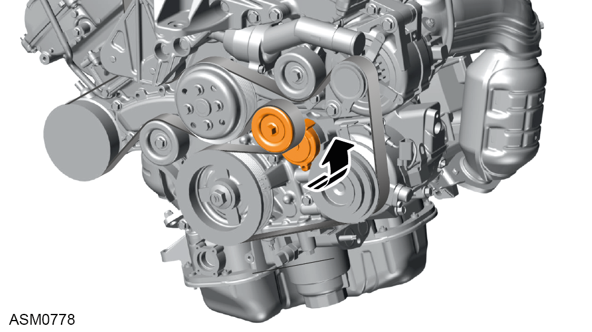
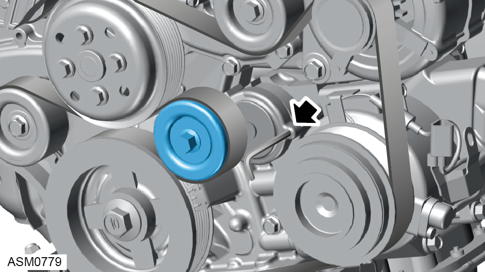
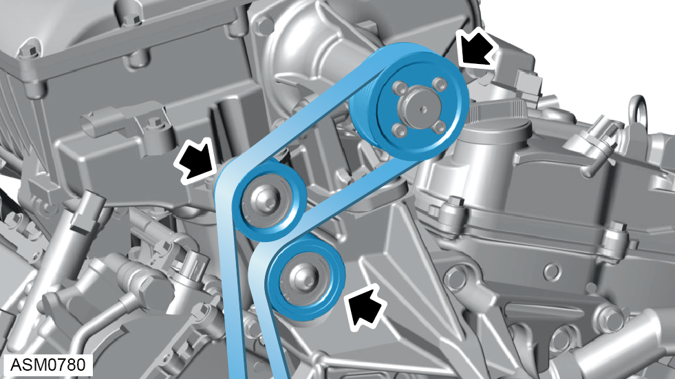
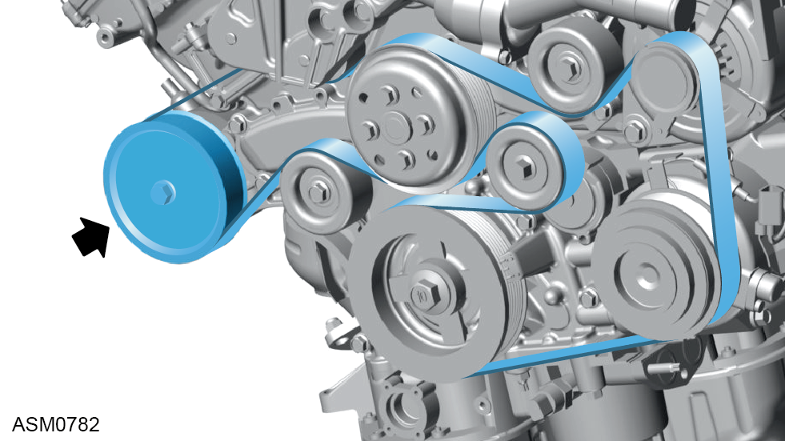
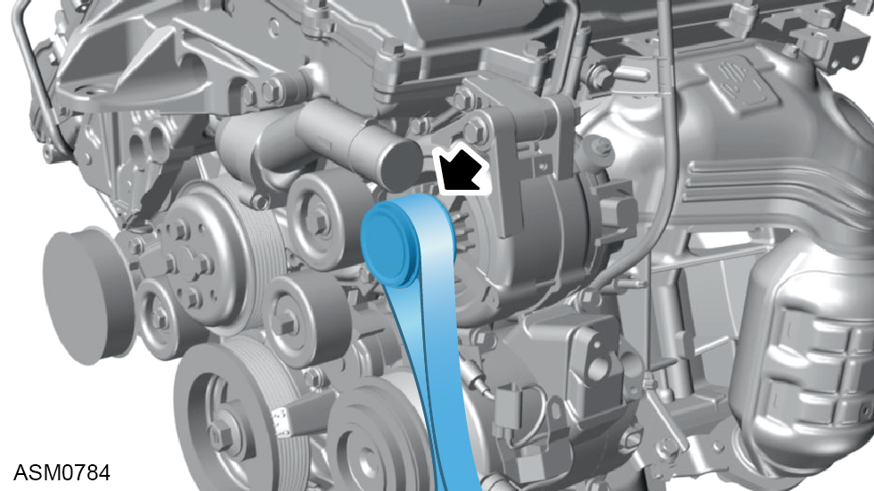
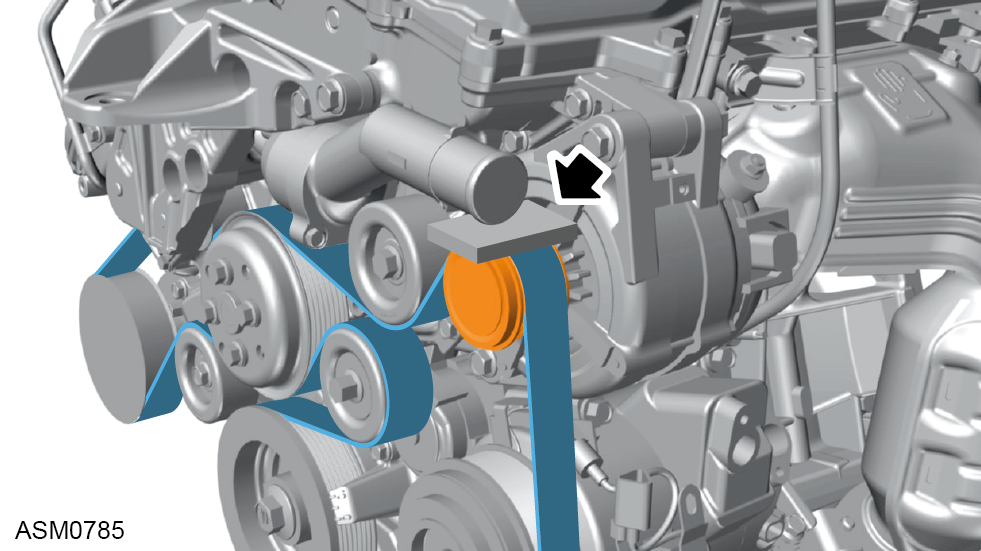
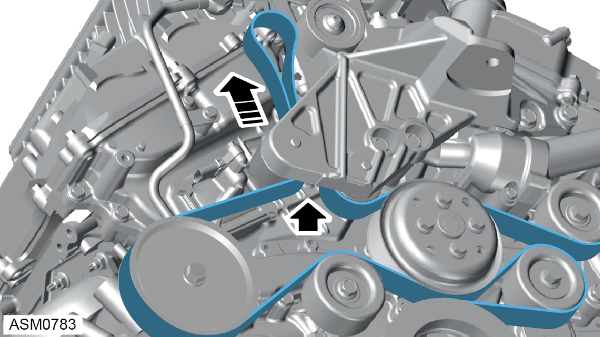

Auxiliary Drive Belt - V6
Print
Operation Code: 41.03.02-02
Removal
- Remove rear undertray. Refer to procedure.
- Remove rear wheel arch liner - right side.
NOTE: Procedure is the same for left side component.

- Rotate belt tensioner counter clockwise to relieve tension from drive belt.
NOTE: If reusing belt, take note of and reinstall in the original direction
NOTE: Vehicle not shown for clarity.

- Use allen key to lock tensioner in fully released position.

- Remove belt from external idler pulley, internal idler pulley and supercharger pulley.
- Unlock and rotate tensioner clockwise to fully tensioned position.
NOTE: This allows greater clearance when removing the belt.

- Remove belt from power steering pump pulley.
- Remove belt from external idler pulley.
- Remove auxiliary drive belt.
Installation

- Install belt to alternator pulley.

- Use suitable block and place between top of alternator pulley and thermostat housing.
 CAUTION: Do not force the block to fit with excessive force as this can cause damage to the belt and to the thermostat housing.
CAUTION: Do not force the block to fit with excessive force as this can cause damage to the belt and to the thermostat housing.
- Refer to illustration for belt route.
- Rotate belt tensioner counter clockwise to relieve tension from drive belt.

- Use suitable bar to pull the belt up toward external idler pulley at top of engine through idler bracket pulleys.
- Install belt to upper pulleys.
- Remove allen key.
- Rotate belt tensioner clockwise.
- Check belt position.
- Remove block.
- Start engine and observe belt and pulley operation and direction.